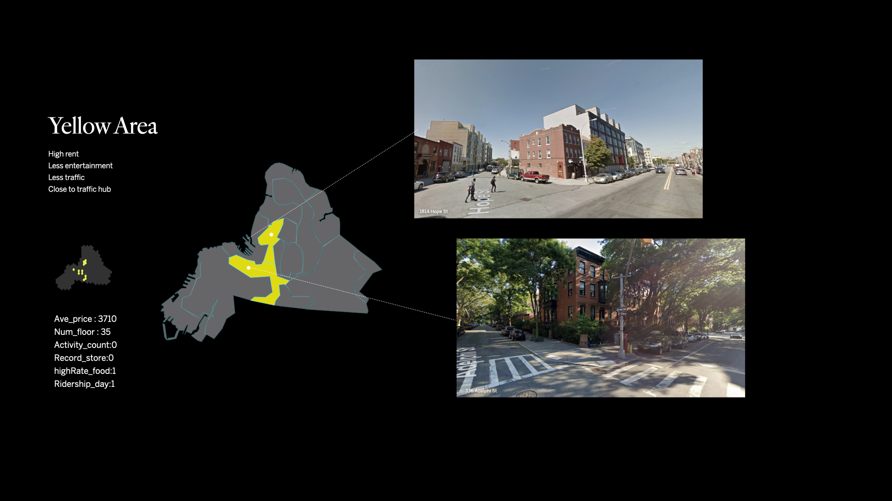
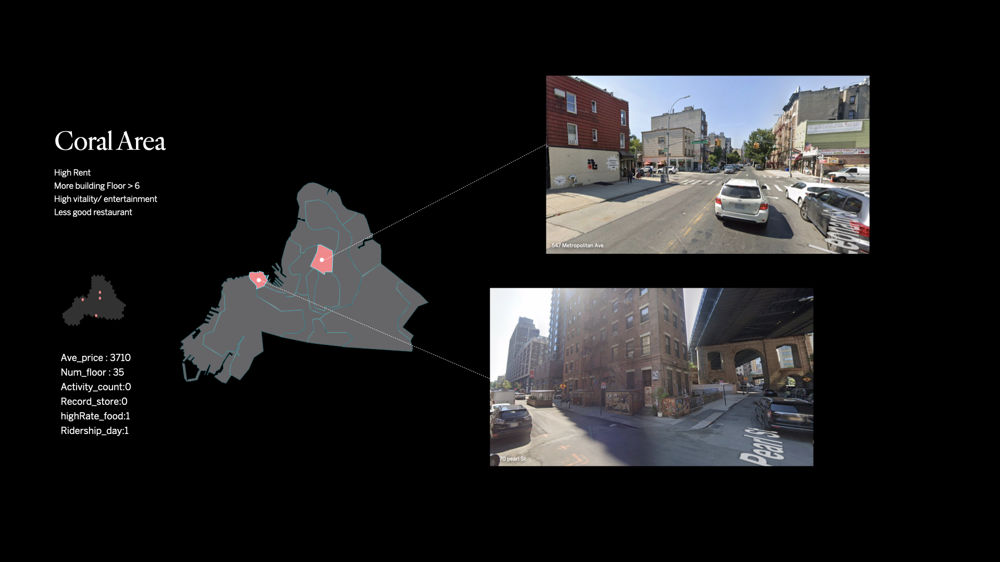
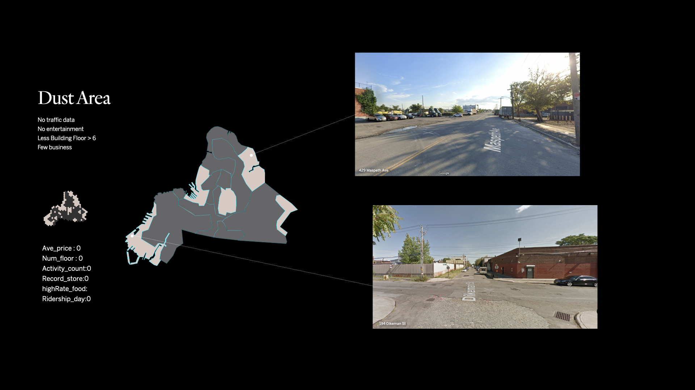
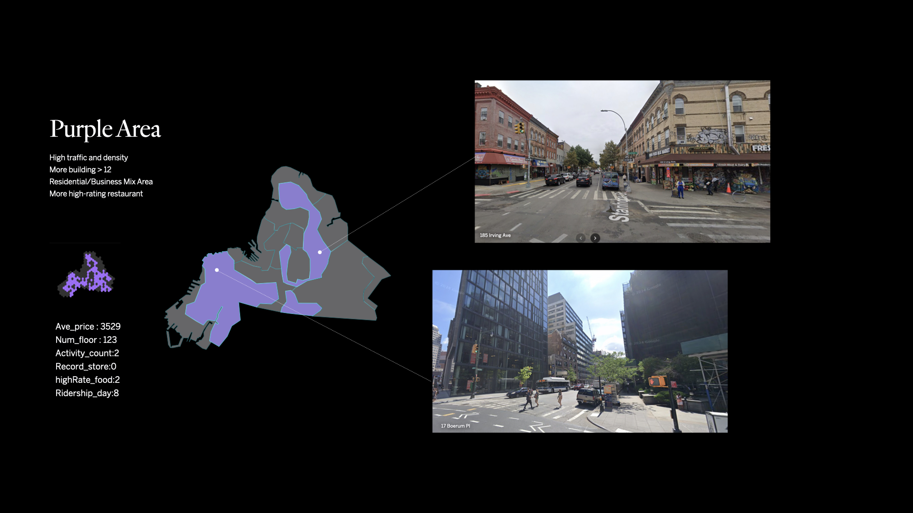
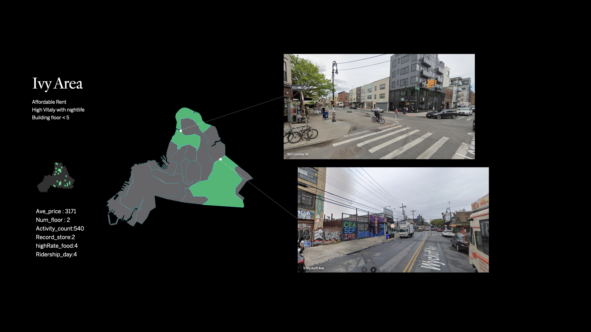

Genda Lin
Instructor: Laura Kurgan, Snoweria Zhang
ReimagineNeighborhoods
Can we remap the neighborhood to reflect the reality?
CHALLENGE
Neighborhood divisions in New York City often fail to reflect evolving realities shaped by human activities. Data and machine learning offer potential to map affinities and redefine boundaries, but thoughtful data selection and methodology are essential to ensure accurate and meaningful outcomes that align with these dynamic changes.
PROJECT
This project explores multidisciplinary approaches to mapping and understanding neighborhoods, integrating machine learning methods to produce dynamic cartographies based on human activity and perception. In is the pilot study, the north of Brooklyn was selected to test the design philosophy and validate key assumptions.
HIGHLIGHTS
- Measured 16 current neighborhoods in the north of Brooklyn, NYC
- Using datasets classified by four features: affordability, vitality, attraction, and appearance, to identify affinities across different entities.
- Introduced five redefined neighborhoods, supported by real street views and detailed feature analyses.
Explore

The borough's quilt of neighborhoods, (Source:The Neighborhoods of Brooklyn by Kenneth T. Jackson and John Manbeck,Yale University Press).
How Neighborhoods in Brooklyn Are Created
Over the last few decades, Brooklyn has transformed into one of New York City's most dynamic and sought-after boroughs. The names and boundaries of its neighborhoods often reflect factors like immigration, geography, natural landscape, or branding by real estate developers.
For instance, Brooklyn Heights, once called Clover Hill, was renamed in the 19th century when it became New York City's first suburb. Its elevated position offered sweeping views of Manhattan, making it highly desirable. Bushwick's origins trace back to Dutch settlers in the 1660s, who named it “Boswijck,” meaning “town in the woods.” Over time, it became a diverse working-class neighborhood shaped by German, Italian, and Latin American influences.
DUMBO (Down Under the Manhattan Bridge Overpass) received its name in the 1970s through a branding effort by artists and developers. The name sought to preserve its industrial charm while attracting interest, embodying Brooklyn's creative spirit. These neighborhood names highlight Brooklyn's dynamic history, where geography, culture, and commerce intersect.
However, the influx of immigrants and gentrification rapidly reshapes Brooklyn's neighborhoods. Traditional classifications fail to capture the evolving realities of how visitors and residents experience these areas, urging the need for reimagined boundaries.
Choose datasets to reflect human activity and perception
I am interested in exploring data of human activity and perception within urban environments. In the speculative pilot project, I aim to redefine neighborhoods and their boundaries using insights gathered from interviews, resulting in four key impact areas: affordability (Can I afford to stay here?), vitality (Do I feel the energy of the place?), attraction (Is there something that draws me in?), and appearance (How do the building heights and aesthetics affect me?)
To begin, I decided to build a data inventory and create a dataset from diverse sources, including Zillow, Google Maps, MTA NYC, and PLUTO. While bias is inevitable, forming initial assumptions serves as a critical first step in exploring and improving the accuracy of the project's goals.


The number of building floors in Brooklyn, (Data Source: PLUTO NYC Open Data)

Ridership of the subway lines in Brooklyn, (Data Source: MTA Open Data)

The restaurant rating 4.2+ in Brooklyn (Data Source: Google Place API)
Explain
From data inventory to 5 new areas through machine learning
Starting with six datasets from the inventory, the data will be assigned to 298 polygons through spatial joins (each polygon covering 2-3 street blocks). The intensity of each feature will then be calculated and aggregated. These data points will be integrated into five new areas using K-means clustering, an unsupervised machine learning method for grouping.


Data points prepared to test spatial join
Scores of features in each polygon
Experiments with different number of clusters
Propose
Five grouping areas by Kmeans clustering algorithm
Each groups with scores in features
The five newly defined neighborhoods in the northern region of Brooklyn
The pilot project aims to explore how data and machine learning can reshape the boundaries and identities of neighborhoods. By generating new maps and narratives, the project provides organizations, urban developers, journalists, residents, and visitors with tools to better understand and connect with neighborhoods. Through the inclusion and exclusion of data inventory, it enables users to gain insights into the unique characteristics and dynamics of these urban spaces. The project tests the following assumptions:
1. The territories and boundaries of neighborhoods are dynamic, shaped byhuman activities and perceptions.
2. Proximity does not always equate to similarity. Some neighborhoods may exhibit greater social or cultural affinities despite physical distances.
3. Mapping affinities drives better decision-making, leading to more locally grounded urban planning and development.
By leveraging data to rethink territorial definitions, this project encourages a nuanced understanding of urban spaces and fosters meaningful engagement with the communities they encompass. The findings aim to inspire new strategies for resource investment and policy-making, tailored to the evolving needs and identities of neighborhoods.
Five newly defined neighborhoods in the northern region of Brooklyn





"AI acts as a lens through which we can identify new boundaries and uncover hidden affinity within our existing systems...Reimagining neighborhoods empowers us to create meaningful impacts for both individuals and communities."
Why reimagine neighborhoods?
As new technology reshape how people perceive urban environments, data-driven and AI-based practices offer both opportunities and risks, depending on the motivations and benefits driving their application.
Efficiency and accuracy are key strengths of AI technology today. These capabilities present transformative opportunities for understanding physical environments by analyzing the data people generate daily. AI acts as a lens through which we can identify new boundaries and uncover hidden affinity within our existing systems. This project leverages these tools to explore the evolving dynamics of Brooklyn's rich cultural, ecological, institutional, and architectural diversity in neighborhoods.
By examining how groups of neighborhoods are interconnected through a thoughtful and systematic data inventory, we can develop a more nuanced and informed approach to urban planning. Whether this involves devising strategies for infrastructure, choosing weekend destinations, or finding an affordable and creative studio. Reimagining neighborhoods empowers us to create meaningful impacts for both individuals and communities..
Bibliography
- An Extremely Detailed Guide to an Extremely Detailed Map of New York City Neighborhoods Larry Buchanan
- https://c4sr.columbia.edu/index.php/projects/what-index
- Understanding our machine-mediated perception of cities with computer vision cartography. Brain Ho
- https://brian-ho.io/Making-a-New-City-Image-or-an-Eye-for-AI
- Five-boroughs-for-the-21st-century , Topos
- https://medium.com/topos-ai/five-boroughs-for-the-21st-century-8da941f53618
- Desirable streets: Where do people prefer to walk? MIT Sensable Lab
- https://senseable.mit.edu/desirable-streets/
- Models all the way down, Knowingmachines.org
- https://knowingmachines.org/models-all-the-way#section3
- Homophily: The Urban History of an Algorithm , Laura Kurgan, Dare Brawley, Brian House, Jia Zhang, and Wendy Hui Kyong Chun
- https://www.e-flux.com/architecture/are-friends-electric/289193/homophily-the-urban-history-of-an-algorithm/
- 20 Brooklyn Neighborhoods Explained , Metropolis Moving
- https://metropolismoving.com/blog/brooklyn-neighborhoods/
- The Neighborhoods of Brooklyn John B. Manbeck, Yale University Press, 2004
- Names of New York: Discovering the City's Past, Present, and Future Through Its Place-Names Joshua Jelly-Schapiro , Pantheon, 2021
- The Intimate City: Walking New York Michael Kimmelman , Penguin Press, 2022
- Cartographic Grounds: Projecting the Landscape Imaginary Jill Desimini , Charles Waldheim Princeton Architectural Press, 2016
- The Situationists and the City: A Reader Tom McDonough Verso Books, 2010
- Learning from Las Vegas Robert Venturi, Steven Izenour, Denise Scott Brown, The MIT Press, 1977
- All Data Are Local: Thinking Critically in a Data-Driven Society Yanni Alexander Loukissas, The MIT Press, 2022
- Mapping Affinities- Democratizing Data Visualization Dario Rodighiero MētisPresses, 2021
- A Moving Border: Alpine Cartographies of Climate Change Marco Ferrari, Elisa Pasqual, Andrea Bagnato Columbia Books on Architecture and the City, 2018
- Close Up at a Distance: Mapping, Technology, and Politics Laura Kurgan, Zone Books, 2013